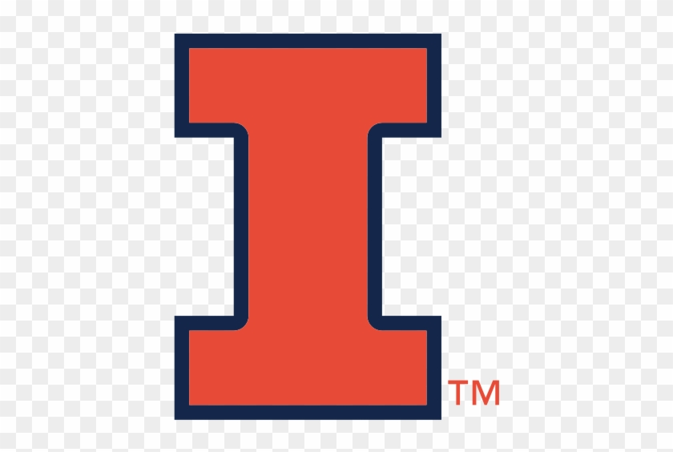

Member of Technical Staff at Nutanix (Prism Infra), working on Cloud Infrastructure & API Performance while pursuing a part-time M.S. in CS at UIUC. Published at IEEE WACV 2026. B.S. in Computer Science & Data Science, Purdue University ’25. Feel free to connect!
Jan 2026 – May 2027
Master of Computer Science
GPA: 3.89

Aug 2022 – Dec 2025
Bachelor of Science in Computer Science and Data Science
GPA: 3.69 | Concentration: Machine Intelligence
Nutanix · San Jose, CA
The Data Mine – Purdue University · West Lafayette, IN
Hewlett Packard Enterprise · Houston, TX
Purdue Vertically Integrated Projects (VIP) · West Lafayette, IN
Purdue University · West Lafayette, IN
SiTime
SonicWall
Explores specialized pose estimation models for animals, introducing species-similarity measures for selecting training data and demonstrating that precise keypoint definitions improve localization performance. Uses antelope species as a case study, reducing required training images while improving Average Precision by 5%.
Read Paper$ stack: Python · AWS Lambda · API Gateway · DynamoDB · OpenSearch · Bedrock · JavaScript
Serverless dataset discovery assistant for natural-language search across 30,000+ indexed records. Uses Bedrock/Claude for filter extraction with fallback keyword search, powered by DynamoDB Streams and OpenSearch indexing.
$ stack: React · Next.js · FastAPI · Python · SQLAlchemy · LLM
3-stage LLM security pipeline with FastAPI asyncio across 10+ endpoints. Async system retrieves prompts, sends to LLM, and auto-grades responses. Full-stack Next.js + Tailwind CSS frontend with FastAPI + SQLAlchemy backend.
$ stack: Python · XGBoost · LSTM · React · FastAPI · AWS S3 · HuggingFace · VADER
ML stock predictor using XGBoost/LSTM achieving 84% within ±10% accuracy. LLM-powered sentiment analysis on 400+ predictions with full-stack React/FastAPI frontend.
$ stack: C++ · Bash · Lex · Yacc
Custom Unix shell with complex command parsing via Lex/Yacc. Supports file redirection, pipes, multi-process execution, signal handling, and subshell functionality.
$ stack: Java · Threads · Server Sockets · Swing
Java-based messaging platform enabling customer-seller communication using multi-threading and server sockets, built with Swing for the GUI interface.
$ stack: HTML · CSS · JavaScript
A modern, responsive website inspired by Uber's design, featuring dynamic resizing and a clean user interface.